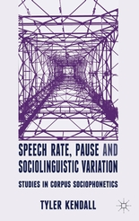

| 
This page posts PDF versions of many of my publications. These are posted here primarily to aid in my tenure review. Copyright remains with the relevant copyright holders. Please see my CV for a complete list of my publications.
Links//
|
Tyler Kendall's (selected) publications with pdfs
- under review, with Valerie Fridland, English in the Western United States. In Raymond Hickey (ed.), Listening to the Past: Audio Records of Accents of English. Cambridge, UK: Cambridge University Press. [ MS PDF ]
- in press, with Valerie Fridland and Charlie Farrington, Durational and Spectral Differences in American English Vowels: Dialect Variation with and across Regions. Journal of the Acoustical Society of America. [ MS PDF ]
- in press, Archiving and Managing Sociolinguistic Data: The Problems of Portability, Access and Security, and Discoverability and Relevance. In Yaeger-Dror and Christopher Cieri (eds.), Special Issue of Language and Linguistics Compass. [ MS PDF ]
- 2013, Data in the Study of Variation and Change. In J. K. Chambers and Natalie Schilling (eds.), The Handbook of Language Variation and Change, 2nd edition, 38-56. Malden, MA/Oxford: Wiley-Blackwell. [ PDF | Book website ]
- 2013, Data Preservation and Access. In Christine Mallinson, Becky Childs, and Gerard Van Herk (eds.), Data Collection in Sociolinguistics: Methods and Applications, 195-205. New York: Routledge. [ PDF ]
- 2013, with Christine Mallinson, Interdisciplinary Approaches. In R. Bayley, R. Cameron, and C. Lucas (eds.), The Oxford Handbook of Sociolinguistics, 153-171. Oxford: Oxford University Press. [ PDF ]
- 2013 BOOK, Speech Rate, Pause, and Sociolinguistic Variation: Studies in Corpus Sociophonetics. Basingstoke, UK: Palgrave Macmillan. [ PDF: Part 1, Part 2, Part 3 | Book at: Palgrave Macmillan, Amazon, ... ]
- 2012, with Valerie Fridland, Exploring the relationship between production and perception in the mid front vowels of U.S. English. Lingua, 122.7: 779-793. [ PDF ]
- 2012, with Valerie Fridland, Variation in perception and production of mid front vowels in the U.S. Southern Vowel Shift. Journal of Phonetics, 40.2: 289-306. [ PDF ]
- 2011, with Joan Bresnan and Gerard Van Herk, The dative alternation in African American English: Researching syntactic variation and change across sociolinguistic datasets. Corpus Linguistics and Linguistic Theory 7.2, 229-244. [ PDF ]
- 2011, Corpora from a sociolinguistic perspective (Corpora sob uma perspectiva sociolinguística). In Stefan Th. Gries (Ed.), "Corpus studies: Future directions", special issue of Revista Brasileira de Linguística Aplicada 11.2, 361-389. [ HTML | PDF ]
- 2011, with Gerard Van Herk (Eds.), "Corpus linguistics and sociolinguistic inquiry", special issue of Corpus Linguistics and Linguistic Theory 7.1. [ Issue Intro PDF ]
- 2011, with Dominic Watt and Anne Fabricius, More on Vowels: Plotting and Normalization. In M. Yaeger-Dror and M. Di Paolo (eds.), Sociophonetics: A Student's Guide, 107-118. New York: Routledge. [ PDF ]
- 2010, Accommodating (ING): Individual variation in mixed-ethnicity interviews. In B. Heselwood and C. Upton, (eds.), Proceedings of Methods XIII: Papers from the Thirteenth International Conference on Methods in Dialectology, 2008: 351-61. Frankfurt am Main: Peter Lang. [ manuscript, PDF ]
- 2010, with Becky Childs, Paul De Decker, Rachel Deal, Jennifer Thorburn, Maia Williamson, and Gerard Van Herk, Stop Signs: The Intersection of Interdental Fricatives and Identity in Newfoundland. Penn Working Papers in Linguistics 16.2. Philadelphia: University of Pennsylvania. [ PDF ]
- 2009, Speech Rate, Pause, and Linguistic Variation: An Examination Through the Sociolinguistic Archive and Analysis Project, Doctoral Dissertation. Durham, NC: Duke University. [ (sort of) summary | PDF (13.1mb) ]
- 2009, with Walt Wolfram. Local and external standards in African American English. Journal of English Linguistics, 37.4: 305-330. [ PDF ]
- 2009, with Christine Mallinson. "The way I can speak for myself": The social and linguistic context of counseling interviews with African American adolescent girls in Washington, DC. In S. L. Lanehart (ed.), African American Women's Language: Discourse, Education, and Identity: 110-126. Newcastle upon Tyne: Cambridge Scholars Publishing. [ PDF ]
- 2008. On the history and future of sociolinguistic data. Language and Linguistics Compass, 2.2: 332-351. [PDF ]
- 2007. Listening to silence: Interpretation and transcription of pause in deposition. In M. T. Turell, M. Spassova, and J. Cicres (eds.), Proceedings of the Second European IAFL Conference on Forensic Linguistics / Language and the Law: 323-332. Barcelona: IULA, Documenta Universitaria. [ PDF ]
- 2007. Enhancing sociolinguistic data collections: The North Carolina Sociolinguistic Archive and Analysis Project. Penn Working Papers in Linguistics 13.2: 15-26. Philadelphia: University of Pennsylvania. [ PDF ]
- 2007. "The people what makes the town": The semiotics of home and town spaces in Princeville, NC. The North Carolina Folklore Journal 54.1: 33-53. [ PDF ]
|